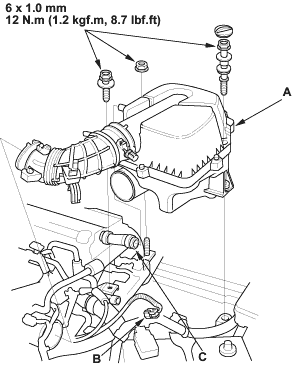
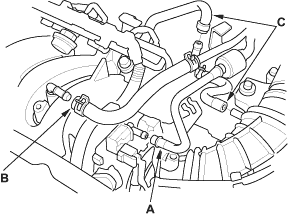
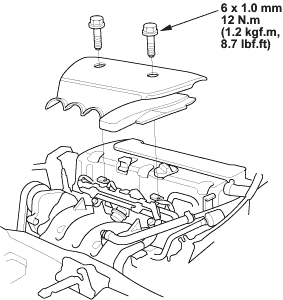

- Install the air cleaner housing (A) and connect the IAT sensor connector (B).

- Install the breather hose (C).
- Install the EVAP canister hose (A), brake booster vacuum hose (B), and vacuum hoses (C).


- Install the intake manifold cover.

- Clean up any spilled engine coolant.
- After installation, check that all tubes, hoses, and connectors are installed correctly.
- Inspect for fuel leaks. Turn the ignition switch ON (II) (do not operate the starter) so that the fuel pump runs for about 2 seconds and pressurises the fuel line. Repeat this operation two or three times, then check for fuel leakage at any point in the fuel line.
- Refill the radiator with engine coolant, and bleed air from the cooling system with the heater valve open (see page 10-6).